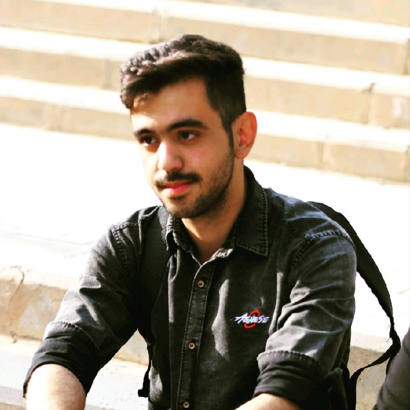

Amir Hossein Movahedi
Graduate student at Sharif University of Technology


I am interested in complex systems, computational neuroscience, graph theory, and machine learning. My research focuses on understanding the principles underlying brain function and developing computational models that capture neural dynamics. In particular, I am interested in the intersection of machine learning, network science, and neuroscience, where mathematical and data-driven approaches can be used to study cognition, behavior, and brain organization.
Currently, I work with EEG data and use data-driven methods to reconstruct brain functional networks from neural recordings. My goal is to infer the underlying interactions between brain regions and better understand how large-scale neural networks give rise to cognitive processes. I am also interested in nonlinear dynamical systems, explainable artificial intelligence, and network-based methods for analyzing neural data.
More broadly, I enjoy combining ideas from physics, mathematics, and computer science to develop interpretable computational models for complex biological systems. In the long term, I hope to contribute to research that advances our understanding of the brain while bridging theoretical modeling with real-world neuroscience applications.